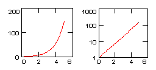
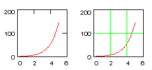
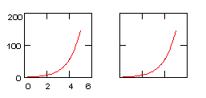
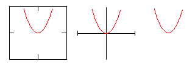
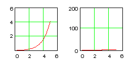

Axes Settings for 2D Plots |
To select the characteristics of each axis in an XY Plot or a Polar Plot:
Various options for scale, numbering, and so on, are available for each axis. Choose options for the x, y, and secondary y axes, or the radial and angular axes separately.
Click "Apply" to preview the plot without closing the dialog. Click "OK" to keep all changes.
When checked, a second y-axis placeholder appears on the right-hand side of the graph, which scales independently of the primary y-axis, allowing you to graph two related expressions of differing scales. Choosing this option also enables the settings for the secondary-y axis tab on this dialog.
When checked, the selected axis is logarithmic. The axis limits must be positive. Not available for the angular scale on polar plots.
|  | |
|---|---|
Log Scale | Log Scale |
When checked, the tick marks on the selected axis are replaced by gridlines.
|  | |
|---|---|
Grid Lines | Grid Lines |
There is also a colored box next to this check box which controls the color of the grid lines. Click the colored box, then select a color in the Color dialog.
When checked, the tick marks on the selected axis are numbered.
|  | |
|---|---|
Numbered Axes | Numbered Axes |
Sets the appropriate axis limit to the first major tick mark beyond the end of the data. When autoscale is disabled, the appropriate axis limits are set right at the data limits. By default, plots are autoscaled on both axes.
If log scale is checked, autoscale cannot be disabled; the upper plot limit is set to the next higher integer power of ten above the trace maximum, and the lower limit is set to the next integer power of ten below the trace minimum. In this case, though, you can set axis limits to the desired power of ten.
This option is not available for polar plots.
Adds one or two horizontal, vertical, or radial lines to a plot. When checked, you see two additional placeholders perpendicular to the axis for which markers are enabled. Not available for the angular scale on polar plots.
For example, to add a vertical line on an X-Y Plot,
There is also a colored box next to this check box which controls the color of the marker lines. Click the colored box, then select a color in the Color dialog.
When checked, the number of tick marks is chosen automatically. When unchecked, you need to specify the number of tick marks in the Number of Grids box. If log scale is checked, Auto Grid cannot be disabled.
Controls the number of tick marks when Auto Grid is unchecked. Enter an integer from 2 to 99. Make sure the number you type isn't so large that the labels on the tick marks crowd together and overlap.
Controls whether the axes intersect in the center of the plot (crossed), whether they intersect in the bottom left of the plot (boxed), or whether they appear at all.
|  | ||
|---|---|---|
Boxed | Crossed | No |
When checked, the x and y-axes have equal scales (not available on polar plots). For example, if one inch along the x-axis stands for 2 units, then one inch along the y-axis stands for 2 units.
When unchecked, the scale on the x-axis is independent of the scale on the y-axis.
This option is not available for polar plots.
|  | |
|---|---|
Equal Scales | Equal Scales |